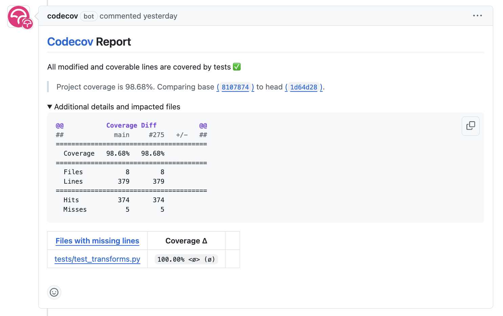

(Level 5) Share your code as a publicly installable package
Overview
Welcome! By the end of the tutorial, you will be able to share your code as a publicly installable package that can be installed using pip install <package-name> and conda install <package-name>.
Prerequisites
We assume that you have a basic understanding of starting a new project and have hosted at least one project on GitHub. If you are new to GitHub, we recommend you start from (Level 4) Share your code as a locally installable Python package where you will learn how to create a new project and host it on GitHub while using GitHub Actions to automatically format your code and run unit tests.
Make sure you have the latest version of scikit-package installed:
Install scikit-package with conda
Ensure that
condais installed on your local computer as instructed in (Required) Use conda environment to install packages and run Python code.Ensure that you have added the
conda-forgechannel to yourcondaconfiguration.conda config --add channels conda-forge
Create a new conda environment
skpkg-envand installscikit-packageandpre-commitsimultaneously by running the following command:conda create -n skpkg-env scikit-package pre-commit
Note
If the above command does not work, ensure you have added the
conda-forgechannel to yourcondaconfiguration in Step 2.Activate the environment:
conda activate skpkg-env
Confirm that you have the latest version of
scikit-packageavailable on GitHub:pip show scikit-package
Step 1. Create a new project with scikit-package
Create a new GitHub repository
Visit https://github.com/new.
Enter the
Repository name. You may usemy-packageor any other name you like.Choose
Public.We want to create an empty repository so set
Noneunder Add .gitignore.Set
NoneUnder Choose a license.Click the Create repository green button to create the repository.
Done!
Create a new project with scikit-package
Run the following command to create a new project folder with
scikit-packageusing the Level 5publictemplate:package create public
Answer the following questions:
Prompt
Description and example
maintainer_name
The name of the project maintainer. This person will make the public releases. e.g., Simon Billinge
maintainer_email
The maintainer’s email address. e.g., sbillinge@columbia.edu
maintainer_github_username
The maintainer’s GitHub username. e.g., sbillinge
contributors
Individuals or groups contributing to the project. e.g., Sangjoon Lee, Simon Billinge, Billinge Group members
license_holders
The license holders listed in
LICENSE.rst. e.g., The Trustees of Columbia University in the City of New Yorkproject_name
The name displayed in the
README.rstand documentation. Usename-with-hyphense.g.,my-package. To support namespace imports, see FAQgithub_username_or_orgname
The GitHub username or organization name. e.g., sbillinge or billingegroup
github_repo_name
The GitHub repository name. Use
name-with-hyphense.g., my-packageconda_pypi_package_dist_name
The name used for publishing to PyPI and conda-forge. Use
name-with-hyphense.g., my-packagepackage_dir_name
The name of the package directory under
src. This name will be used in when importing modules from this package. Usename_with_underscorese.g., my_packageproject_short_description
A brief description of the project, shown in
pyproject.toml. e.g., A Python package standard for scientific codeproject_keywords
A list of keywords included in
pyproject.toml. e.g., PDF, diffraction, neutron, x-raymin_python_version
The minimum supported Python version. e.g. 3.11. Current practice (SPEC 0 specification) is to drop support for Python versions that were released more than 72 months ago.
max_python_version
The maximum supported Python version e.g. 3.13. Ideally, the current latest version.
needs_c_code_compiled
Specifies whether C code compilation is required. For pure Python packages, the default value is
No.has_gui_tests
Specifies whether GUI tests are included. For most packages, the default value is
Nobut will be yes if your app has a gui and there are tests that run the GUI.Note
You may press the “Enter” key to accept the default values for the questions.
Now type
lsto check a new folder has been created.
Install your package locally
Create a new conda environment. Let’s call this environment
my-package-env:conda create -n my-package-env python=3.13 \ --file requirements/conda.txt \ --file requirements/tests.txt
Activate the conda environment:
conda activate my-package-env
Build and install the package locally:
pip install -e . --no-deps
Note
What is the
-eflag?The
-eflag indicates that you want to install the package in “editable” mode, which means that any changes you make to the source code will be reflected immediately without needing to reinstall the package. This is useful for development purposes.Note
What is the
--no-depsflag?The
--no-depsflag tells pip not to install any dependencies listed inrequirements/pip.txt. This is because we have already installed the dependencies in the conda environment using the command above.See also
Why is it required to list dependencies both under
pip.txtandconda.txt? Please refer to the FAQ section Dependency management.Then, run the tests using the following command:
pytest
Ensure tests all pass with green checkmarks. Notice that in
tests/test_functions.py, we are importing the locally installed package.Done!
Build documentation locally
/docs is the the Sphinx documentation folder. The documentation will be built locally first and then automatically built and hosted on GitHub Pages when a new release is created.
Install documentation related dependencies:
conda install --file requirements/docs.txt
Enter into the
docsproject directory and render documentation:cd docs make html
Open the rendered documentation via web browser:
open _build/html/index.htmlHere is a shortcut if you want to use it from the root directory of the project:
cd dosc && make html && open _build/html/index.html && cd ..
See also
You can use a
aliasshortcut. Open~/.bashrcin your text editor and add the following line:alias doc='cd docs && make html && open _build/html/index.html && cd ..'
Apply the changes to your current terminal session:
source ~/.bashrc
Now, you can simply enter the
docscommand in your terminal to build and open the documentation:doc
(Optional for macOS/Linux only) Do you want to re-render documentation without running doc command every time? You can use sphinx-reload.
Install the dependencies including
sphinx-reloadsourced fromPyPI:conda install --file requirements/docs.txt pip install sphinx-reloadRun the following command to start live-reloading:
sphinx-reload docsNow, each time you make changes to the documentation, it will be automatically reloaded in your web browser.
Upload README.md to your GitHub repository
At the moment, the GitHub repository is empty. Let’s create a local branch called main and upload this local branch to the remote GitHub repository.
Follow the series of steps to initialite
Git. You only have to do this once.git init git remote add origin <your-github-repo-url> git branch -M main
Commit the README file to the Git database and push it to the remote GitHub repository:
git add README.md # If you are using Level 4 git add README.rst # If you are using Level 5 git commit -m "docs: add README" git push -u origin main
Note
What’s
origin?originis the default name for the remote repository under your GitHub account. You can think of it as a nickname for the remote repository. You can also use any other name you like, butoriginis the most common convention. For more, please read Do you have a general summary of each term used in the GitHub workflow?.Note
What is
-unext togit push?The
-uflag tells Git to set the upstream (remote) branch for the local branch. This means that in the future, you can simply usegit pushwithout specifying the remote and branch name, and Git will know where to push your changes.
Step 2. Automate code linting and testing with GitHub Actions
We will do 3 things in order to automate testing, linting, infrastructure in your GitHub repository. Rest assured that these configuration steps are only done once!
The above steps will take 5 to 10 minutes in total but save hours and days of time in the long run.
1. Setup pre-commit CI in the remote repository in each pull request
Now, we want to ensure pre-commit hooks are also executed when a pull request is made in the remote repository.
Visit https://github.com/apps/pre-commit-ci and click Configure.
Select the repository(s).
Done!
2. Setup Codecov token for GitHub repository
We also want to ensure we report that tests are written for the incoming code and report in the incoming PR as shown below:
Warning
Is this NOT your first time setting up Codecov? Setting up the Codecov report can be done just once for all projects under your account or a GitHub organization with the “global token.” Please check whether you already have a Codecov token. If it exists, you may still follow the steps, but you don’t have to create a new token. Instead, you can use the existing token.
Ensure your GitHub repository is public.
Visit
https://app.codecov.io/account/gh/<your_github_username_or_orgname>/org-upload-token, replacing<your_github_username_or_orgname>with your actual GitHub username or organization name.Under Select an authentication option, select
Required.Click Generate or Regenerate to create a new token.
Click on the clipboard symbol to copy
CODECOV_TOKEN. Copy the one that starts withCODECOV_TOKEN=. Here is an example of what it looks like:CODECOV_TOKEN=abcd1234-5678-1234-5678-b862619523bd
In your GitHub repository, visit Settings ‣ Actions ‣ Secrets and Variables.
If the repository is under your personal account, click New repository secret.
If the repository is under an organization, click Manage organization secrets ‣ New organization secret.
Under the Name field, type
CODECOV_TOKEN.Under the Secret field, paste the
CODECOV_TOKENvalue you copied earlier without any modification.Click Add secret to save the token.
Done. From now on, a new Codecov comment will be generated on each PR!
3. Allow GitHub Actions to write comments in PRs
We’d like to have GitHub Actions write comments in the incoming pull request to guide us. We need to provide permissions in the GitHub repository settings by following the steps below.
Visit the Settings page of the GitHub repository.
Click on Actions in the left sidebar.
Click on General in the left sidebar.
Scroll down to the Workflow permissions section.
Select Read and write permissions.
Done!
Step 3. Upload rest of files to GitHub repository with pull request and news item
Upload remaining files
Before we upload anything to the main branch, we want to check the incoming code formatted, tested, and reviewed. We will try to automate these tasks as much as we can while creating a pull request (PR) to the main branch.
Just in case, pull the latest code from the remote
mainbranch to your localmainbranch:git checkout main git pull origin main
Setup pre-commit locally so that code is linted before a commit is made:
pre-commit installCheckout a new branch called
skpkg-publicfrom themainbranch:git checkout -b skpkg-public git add . git commit -m "skpkg: start a new level 5 project with skpkg" git push -u origin skpkg-public
Note
Did you see any failed
pre-commithooks after you typedgit commit -m? If so, no commit will be made. Confirm by typinggit log. Then, simply re-rungit add <file>on the files that have been modified bypre-commitand re-enter the same commit message again, such asgit commit -m "skpkg: start a new project with skpkg template". If you are having trouble getting a commit to be accepted, please refer to the FAQ section How do I fix conflicted hook auto-fix errors?.
Add news items in the GitHub pull request
Before merging to main, we require that each PR includes a file documenting the changes under \news. This ensures that the changes are documented in the CHANGELOG.rst when you create a new release, as shown in https://scikit-package.github.io/scikit-package/release.html, for example.
Important
If no news file is created for this PR, the CI will not only fail but also write a comment to remind you to create a news file. Recall we granted GitHub Actions permission to write comments in the PR in the previous section.
Let’s create a news item for the changes made in this PR.
Check out the
skpkg-publicbranch and sync with the remote branch.git pull origin skpkg-public
Make a copy of
news/TEMPLATE.rstand rename tonews/<branch-name>.rst.Do not delete
news/TEMPLATE.rst. Leave it as it is.Do not modify other section headers in the rst file. Replace
* <news item>with the following item:**Added:** * Support public releases with scikit-package by migrating the package from Level 4 to Level 5 in the scikit-package standard.
See also
To streamline the above steps, you may instead run
package add news --add -m "Support public releases with scikit-package by migrating the package from Level 4 to Level 5 in the scikit-package standard.". For more, please refer to Writing news items for release notes.Push the change to the remote GitHub repository.
git add news/skpkg-public.rst git commit -m "chore: Add news item for skpkg-public" git push origin skpkg-public
Create a pull request
In your GitHub repository, click Compare & pull request.
Set the PR title as
skpkg: start a new project with Level 5 tutorial.The
basebranch should bemainand thecomparebranch should beskpkg-public.Click Create pull request.
Wait all GitHub Action workflows to run including
Test on PR.Also wait for
pre-commitCI to run and pass.Note
Did
pre-commit CIfail?If the pre-commit failed, you will need to first pull the new commit created by
pre-commit CIbefore making any new edits locally. You can do this by running the following command:git pull origin skpkg-public
If you have more problems, please read the FAQ section on How do I fix conflicted hook auto-fix errors?.
Click Files changed in the PR to to review the new files added to the repository.
Once reviewed, click Merge pull request.
Delete the remote branch after merging.
Visit your GitHub repository and confirm that the
mainbranch is updated.Congratulations! You are done with creating a Level 5 project with
scikit-package.
Ready for public release?
Congratulations! Let’s release your package to PyPI and conda-forge. Visit Publish on GitHub and to PyPI to have your package available via conda install and pip install!
(Recommended) How to develop your code moving forward using pull requests
Assume that you have successfully followed the previous steps. Now, you want to add new code to your GitHub repository. Perhaps you are working with a group of people. Here is a high-level overview with step-by-step instructions on how to do that:
Pull the latest code from the remote
mainbranch:git checkout main git pull origin main
Note
Recall that we used the name
originas the nickname for the remote GitHub repository.Ensure that your local
mainbranch is synced with the remotemainbranch by running:git logCreate a new local branch from the
mainbranch. Let’s call this branchskpkg:git checkout -b <branch-name>
Modify any file that you want. Then, stage and commit the changes:
git add <file-modified-added-deleted> git commit -m "feat: <your commit message>"
Push your code from
<branch-name>to the remote<branch-name>branch:git push --set-upstream origin <branch-name>
Visit your GitHub repository.
Create a PR from
origin/<branch-name>toorigin/main.Wait for the
Tests on PRandpre-commitchecks to pass.Merge the PR, delete the branch.
Repeat the steps in this section.
Done!
(Optional) Useful features available in Level 5
Preview documentation in each pull request
Do you want to review documentation changes easily? Follow the instructions in How can I preview the documentation in each pull request? to view rendered documentation for each pull request with a public URL.
Build API reference documentation
Here is how to create an API reference section, like https://www.diffpy.org/diffpy.utils/api/diffpy.utils.html:
If your package can be imported as
import <package_name>, visit How do I build API .rst files automatically for a standard Python package?.If your package supports namespace import, like
import <namespace_name>.<package_name>, visit How do I build API .rst files for a Python package with a namespace import?.
Set up default prompt values
When you create a new project in Level 3, 4 or 5, you will be prompted to enter the values for some variables, like maintainer_name, maintainer_email and maintainer_github_username. These variables have default values in the package. It can save your time and reduce errors if you can change the default values that are more relevant for your installation of scikit-package.
To set up your own default promprt values, please refer to How can I change the default values that appear in the prompt when creating projects in Level 3,4,5?.